IIS操作步骤
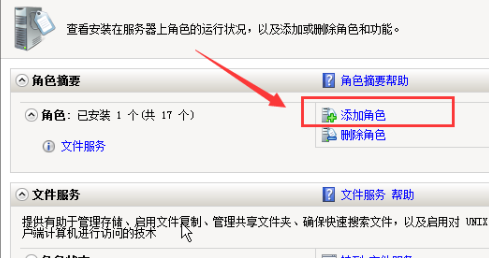
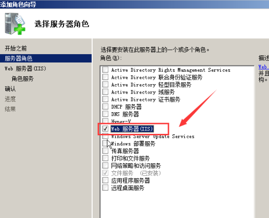
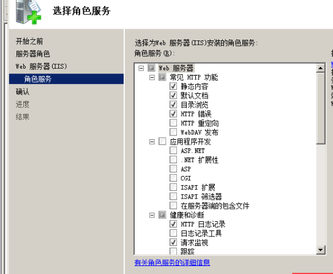
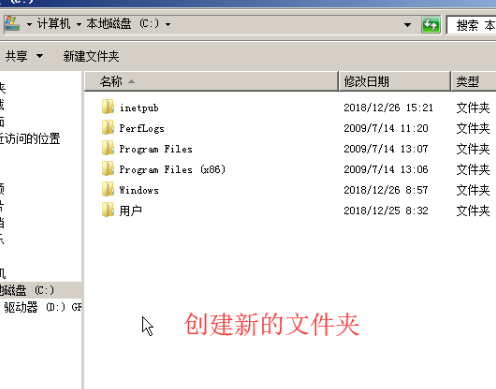
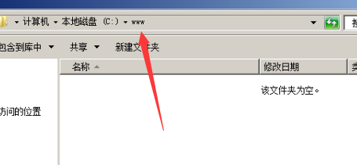
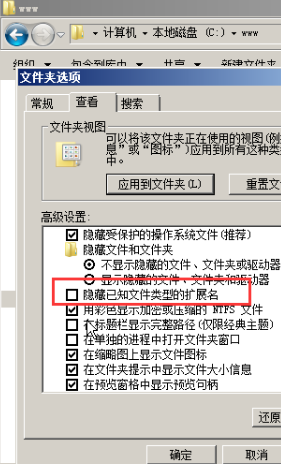
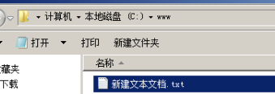
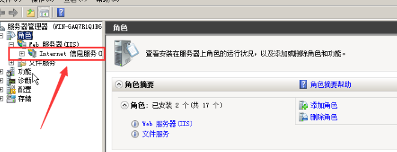
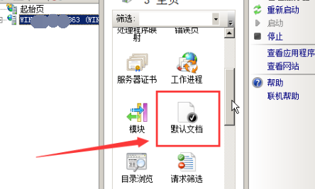
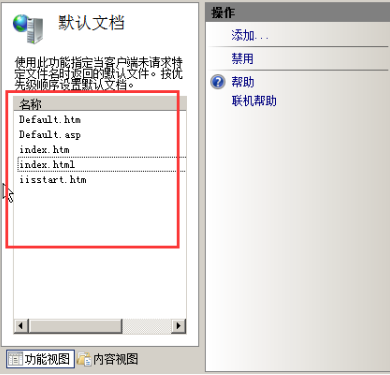
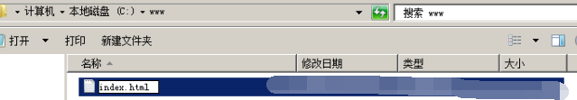
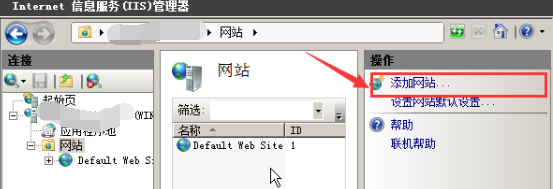
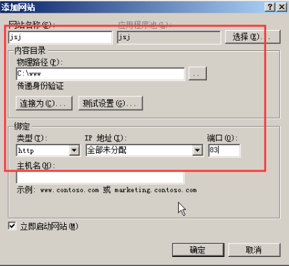
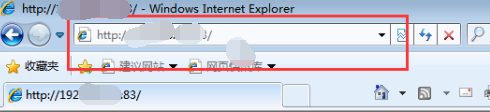
直接装的wamp
腾讯云主机控制台
安全组里可以配置要开放的端口
关闭防火墙
（C:\wamp\bin\apache\Apache2.4.4）
打开httpd.conf文件
require all denied
改成：
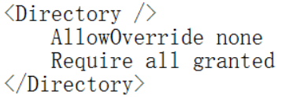
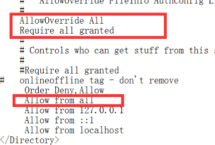
wamp用localhost可以访问，用公网ip无法访问
用外网访问提示403 forbbiden
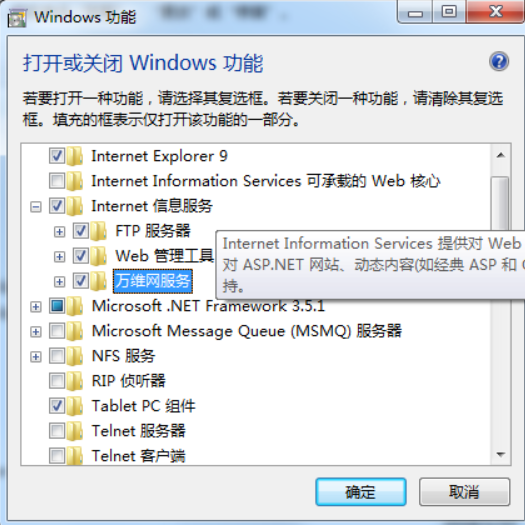
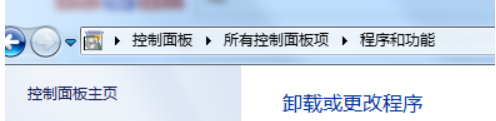
最好关闭防火墙
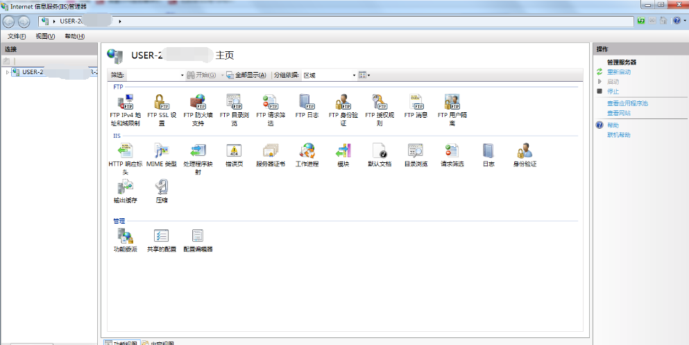
打开http://localhost
建立web服务器
将网站挂在8080端口上
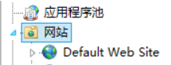
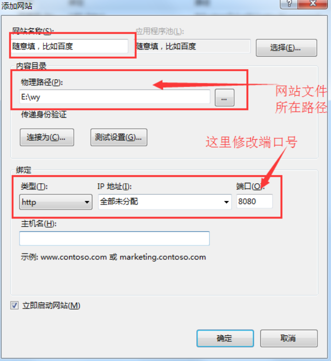
在IIS中可以选择“添加虚拟目录”和“添加应用程序”两种方法
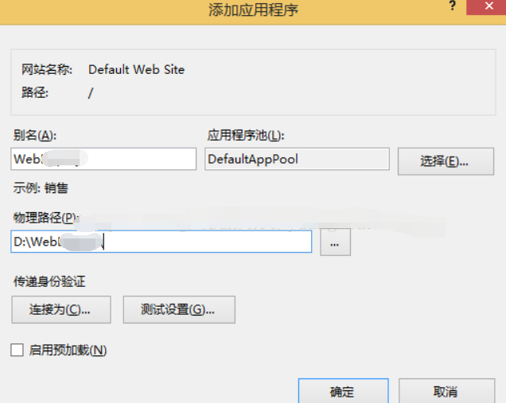
选择一个网站或者虚拟目录
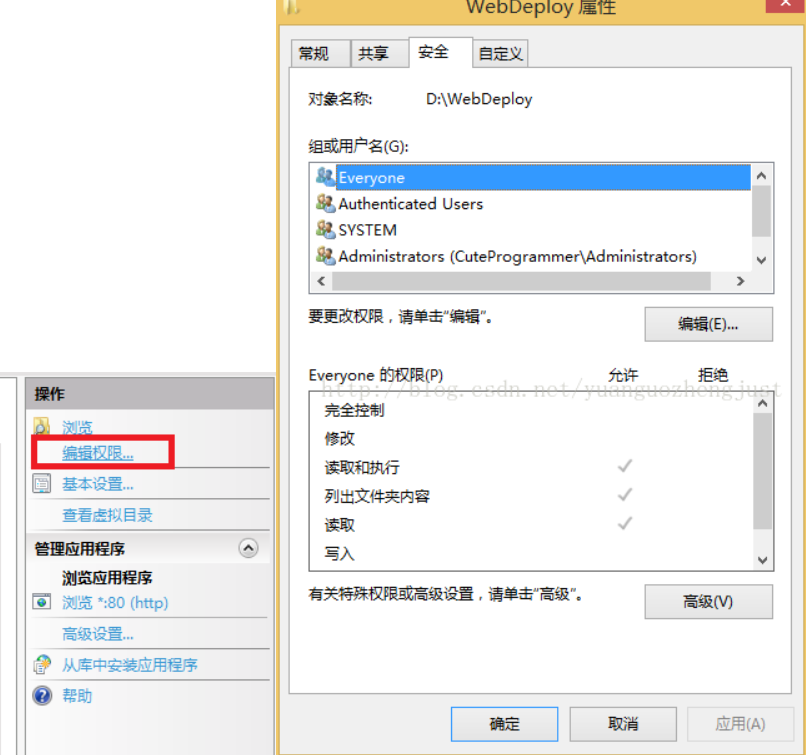
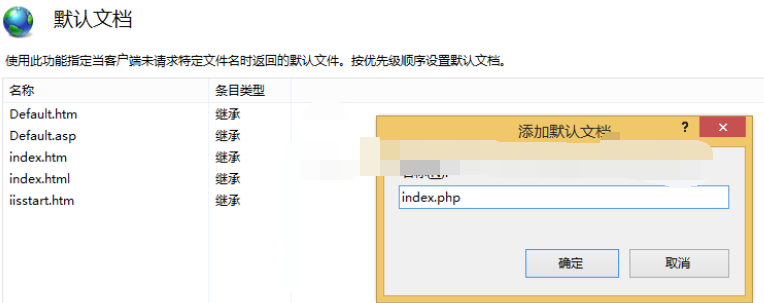
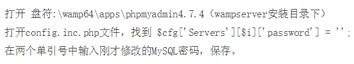
验证码功能
<!DOCTYPE html>
<html>
<head>
<meta charset="UTF-8">
<meta name="viewport" content="width=device-width, initial-scale=1.0">
<meta http-equiv="X-UA-Compatible" content="ie=edge">
<title>前端验证码功能</title>
<style>
*{
margin: 0;
padding: 0;
}
body{
background: rgba(0, 0, 0, .1);
/* background: #061227; */
}
form{
width: 600px;
margin: 100px auto;
}
.box{
height: 40px;
line-height: 40px;
}
.tip{
float: left;
}
input{
float: left;
width: 200px;
height: 30px;
padding: 3px 10px;
line-height: 30px;
}
#identify{
float: left;
width: 100px;
height: 40px;
line-height: 40px;
font-weight: bold;
text-align: center;
letter-spacing: 2px;
background: #365c64;
color: #fff;
border-radius: 5px;
margin: 0 10px;
}
.btn{
margin: 25px auto;
}
.btn button{
width: 200px;
height: 36px;
line-height: 36px;
background: #409eff;
border-radius: 5px;
border: 0;
color: #fff;
}
</style>
</head>
<body>
<form action="">
<div class="box">
<span class="tip">验证码：</span>
<input type="text" id="text" value="" placeholder="请输入验证码" autocomplete="off">
<span id="identify" onclick="generatedCode()"></span>
<a href="javascript:void(0)" onclick="generatedCode()">看不清，换一张</a>
</div>
<div class="btn"><button onclick="checkCode()">验证</button></div>
</form>
</body>
<script>
generatedCode();
// 随机生成验证码
function generatedCode() {
var code1 = "";//生成的验证码
var array = [0, 1, 2, 3, 4, 5, 6, 7, 8, 9, 'A', 'B', 'C', 'D', 'E', 'F', 'G', 'H', 'I', 'J', 'K', 'L', 'M', 'N', 'O', 'P', 'Q', 'R', 'S', 'T', 'U', 'V', 'W', 'X', 'Y', 'Z'];
for (let i = 0; i < 4; i++) {
var index = Math.floor(Math.random() * 36);//随机0-35
code1 += array[index];
document.getElementById("identify").innerHTML = code1;
}
console.log("二维码是：",code1)
};
// 验证用户输入
function checkCode() {
var code2 = document.getElementById("identify").innerHTML;//获取当前生成的验证码
code2 = code2.toUpperCase();
var code3 = document.getElementById("text").value; //客户输入的验证码
code3 = code3.toUpperCase();//把客户输入的验证码转换为大写
console.log("生成的二维码是:"+ code2 +"\n用户输入的验证码是:"+ code3)
if (code2 === code3) {
alert("恭喜验证成功");
// window.open('http://www.baidu.com');
} else {
alert("输入的验证码不正确");
code3 = "";//清空用户输入
}
}
</script>
</html>WampServer
腾讯云服务器
Windows Server 2012 R2，WampServer 2.4。
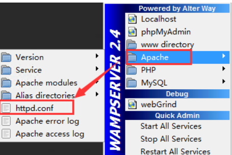
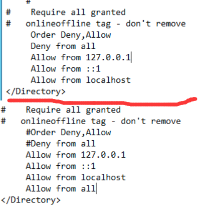
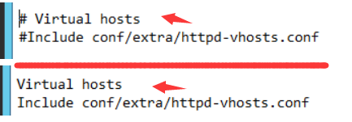
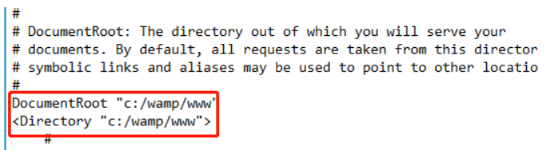
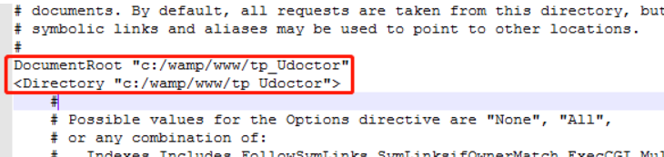
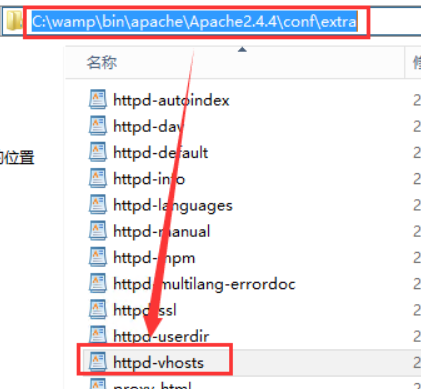
FTP是 File Transfer Protocol文件传输协议的缩写，用来在两台计算机之间互相传送文件。
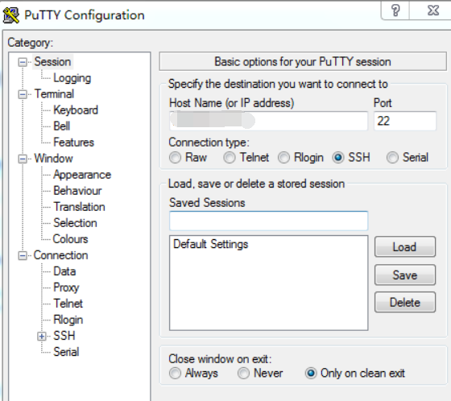
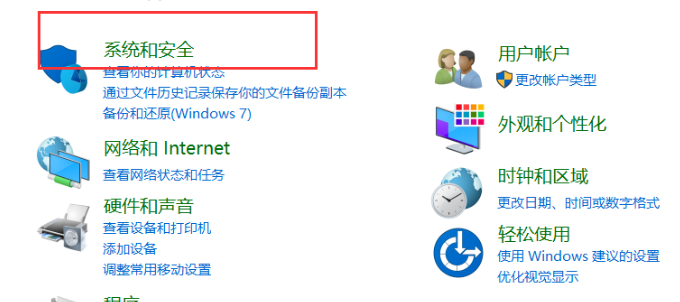
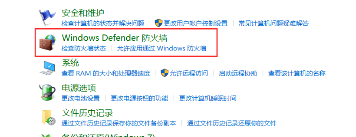
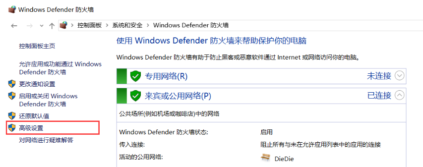
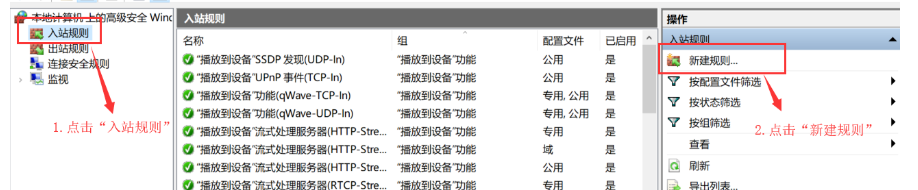
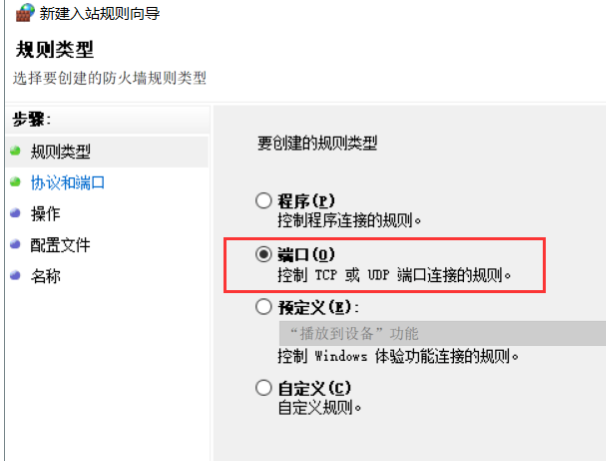
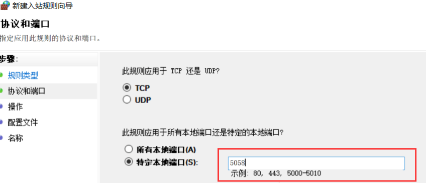
Xftp使用方法
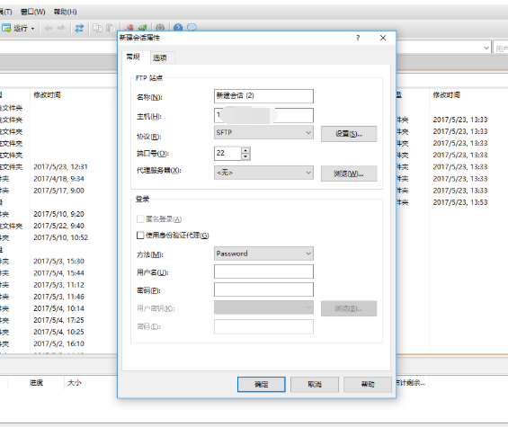
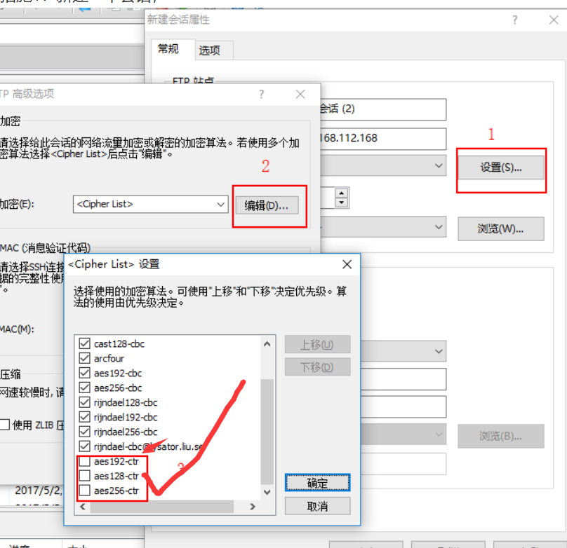
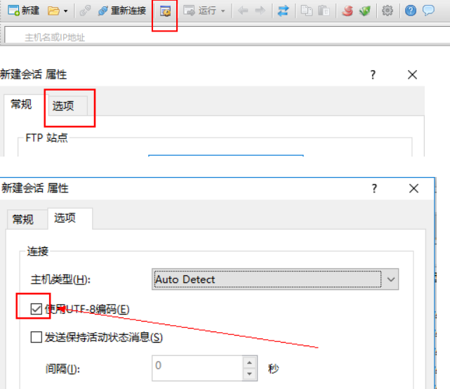
点击Download下方的Free License菜单
https://www.netsarang.com/
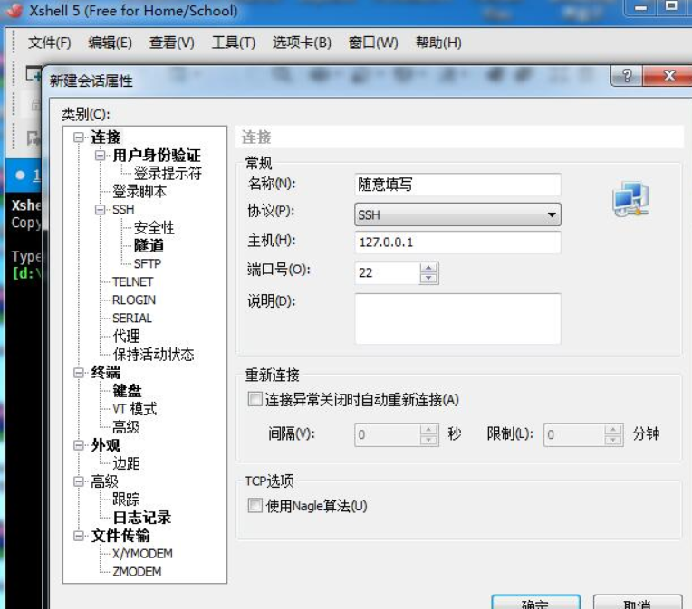
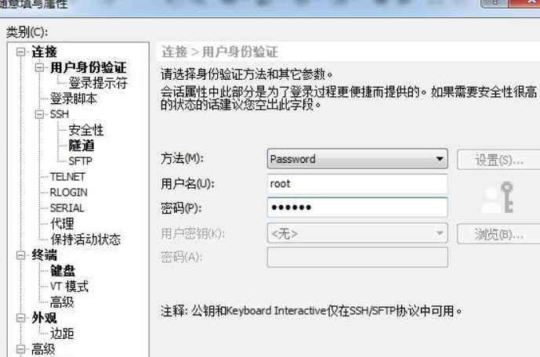
好了，欢迎在留言区留言，与大家分享你的经验和心得。
感谢你学习今天的内容，如果你觉得这篇文章对你有帮助的话，也欢迎把它分享给更多的朋友，感谢。